Introduction to Tensors
Contents
1. Introduction to Tensors¶
import tensorflow as tf
import numpy as np
Tensors 就是 multi-dimensional arrays + uniform type (called a
dtype), 所以就像numpy的np.arrays.但差別是，所有的 tensors 都是 immutable，所以 you can never update the contents of a tensor, only create a new one.
1.1. Basics¶
首先，建立一些 basic tensors
Here is a “scalar” or “rank-0” tensor .
A scalar contains a single value, and no “axes”.
複習一下 numpy 學果的 shape, axes, 和 rank
[2,3,4]這種 array，他的 shape 是 (3,)，只有 1 個軸 (第一軸)，所以 rank = 1[[1,2,3], [4,5,6]]這種 array，他的 shape 是 (2, 3)，有兩個軸 (第一軸和第二軸)，所以 rank = 2[[[1,2,3],[4,5,6]], [[7,8,9],[10,11,12]]]這種 array，他的 shape 是 (2,2,3)，所以 rank = 32這種 array，他的 shape 是 ()，根本沒有軸，所以他的 rank = 0
接下來，對 tensor 的介紹，概念完全一樣：
1.1.1. Scalar (rank-0 tensor)¶
# This will be an int32 tensor by default; see "dtypes" below.
rank_0_tensor = tf.constant(4)
print(rank_0_tensor)
tf.Tensor(4, shape=(), dtype=int32)
對 tensor 最重要的 attribute，就是
shape和dtype，可以看到他分別 print 出這兩個 attribute 的結果：shape = ()，因為從 list 的角度，他根本不是 list，所以連第一軸都沒有，rank = 0dtype = int32表示是整數型 type
1.1.2. Vector (rank-1 tensor)¶
# Let's make this a float tensor.
rank_1_tensor = tf.constant([2.0, 3.0, 4.0])
print(rank_1_tensor)
tf.Tensor([2. 3. 4.], shape=(3,), dtype=float32)
1.1.3. Matrix (rank-2 tensor)¶
# If you want to be specific, you can set the dtype (see below) at creation time
rank_2_tensor = tf.constant([[1, 2],
[3, 4],
[5, 6]], dtype=tf.float16)
print(rank_2_tensor)
tf.Tensor(
[[1. 2.]
[3. 4.]
[5. 6.]], shape=(3, 2), dtype=float16)
A scalar, shape: [] |
A vector, shape: [3] |
A matrix, shape: [3, 2] |
|---|---|---|
| 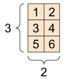 |
1.1.4. More axes tensor¶
之後做訓練的時候，都會是多軸的 tensor
來看看以下的 3 軸 範例
# There can be an arbitrary number of
# axes (sometimes called "dimensions")
rank_3_tensor = tf.constant([
[[0, 1, 2, 3, 4],
[5, 6, 7, 8, 9]],
[[10, 11, 12, 13, 14],
[15, 16, 17, 18, 19]],
[[20, 21, 22, 23, 24],
[25, 26, 27, 28, 29]],])
print(rank_3_tensor)
tf.Tensor(
[[[ 0 1 2 3 4]
[ 5 6 7 8 9]]
[[10 11 12 13 14]
[15 16 17 18 19]]
[[20 21 22 23 24]
[25 26 27 28 29]]], shape=(3, 2, 5), dtype=int32)
There are many ways you might visualize a tensor with more than two axes.
A 3-axis tensor, shape: [3, 2, 5] |
||
|---|---|---|
| 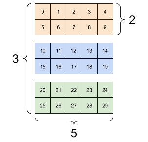 | 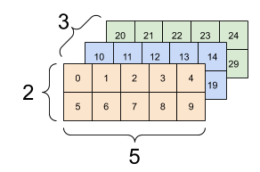 |

|
1.1.5. tensor <-> numpy¶
用
np.array(tensor_obj)或tensor_obj.numpy()來將 tensor 轉成 numpy用
convert_to_tensor(numpy_obj)將 numpy 轉成 tensor
rank_2_tensor
<tf.Tensor: shape=(3, 2), dtype=float16, numpy=
array([[1., 2.],
[3., 4.],
[5., 6.]], dtype=float16)>
np.array(rank_2_tensor)
array([[1., 2.],
[3., 4.],
[5., 6.]], dtype=float16)
rank_2_tensor.numpy()
array([[1., 2.],
[3., 4.],
[5., 6.]], dtype=float16)
numpy_obj = np.array([[1,2], [3,4], [5,6]])
numpy_obj
array([[1, 2],
[3, 4],
[5, 6]])
tf.convert_to_tensor(numpy_obj)
<tf.Tensor: shape=(3, 2), dtype=int64, numpy=
array([[1, 2],
[3, 4],
[5, 6]])>
1.1.6. type¶
Tensors often contain floats and ints, but have many other types, including:
complex numbers
strings
1.1.7. shape¶
The base
tf.Tensorclass requires tensors to be “rectangular”—that is, along each axis, every element is the same size.However, there are specialized types of tensors that can handle different shapes:
Ragged tensors (see RaggedTensor below)
Sparse tensors (see SparseTensor below)
1.1.8. operations¶
基本加減乘除：
+或tf.add()-*或tf.multiply()(element-wise 相乘)
矩陣運算
@或tf.matmul()(矩陣相乘)
summarise:
reduce_max().tf.math.argmax().
a = tf.constant([[1, 2],
[3, 4]])
b = tf.constant([[1, 1],
[1, 1]]) # Could have also said `tf.ones([2,2])`
print(tf.add(a, b), "\n")
print(tf.multiply(a, b), "\n")
print(tf.matmul(a, b), "\n")
tf.Tensor(
[[2 3]
[4 5]], shape=(2, 2), dtype=int32)
tf.Tensor(
[[1 2]
[3 4]], shape=(2, 2), dtype=int32)
tf.Tensor(
[[3 3]
[7 7]], shape=(2, 2), dtype=int32)
print(a + b, "\n") # element-wise addition
print(a * b, "\n") # element-wise multiplication
print(a @ b, "\n") # matrix multiplication
tf.Tensor(
[[2 3]
[4 5]], shape=(2, 2), dtype=int32)
tf.Tensor(
[[1 2]
[3 4]], shape=(2, 2), dtype=int32)
tf.Tensor(
[[3 3]
[7 7]], shape=(2, 2), dtype=int32)
Tensors are used in all kinds of operations (or “Ops”).
c = tf.constant([[4.0, 5.0], [10.0, 1.0]])
# Find the largest value
print(tf.reduce_max(c))
# Find the index of the largest value
print(tf.math.argmax(c))
# Compute the softmax
print(tf.nn.softmax(c))
tf.Tensor(10.0, shape=(), dtype=float32)
tf.Tensor([1 0], shape=(2,), dtype=int64)
tf.Tensor(
[[2.6894143e-01 7.3105860e-01]
[9.9987662e-01 1.2339458e-04]], shape=(2, 2), dtype=float32)
Note: Typically, anywhere a TensorFlow function expects a Tensor as input, the function will also accept anything that can be converted to a Tensor using tf.convert_to_tensor. See below for an example.
tf.reduce_max([1,2,3])
<tf.Tensor: shape=(), dtype=int32, numpy=3>
tf.reduce_max(np.array([1,2,3]))
<tf.Tensor: shape=(), dtype=int64, numpy=3>
1.2. About shapes¶
一些名詞：
Shape: The length (number of elements) of each of the axes of a tensor.
Rank: Number of tensor axes. A scalar has rank 0, a vector has rank 1, a matrix is rank 2.
Axis or Dimension: A particular dimension of a tensor.
Size: The total number of items in the tensor, the product of the shape vector’s elements.
Note: Although you may see reference to a “tensor of two dimensions”, a rank-2 tensor does not usually describe a 2D space.
Tensors and tf.TensorShape objects have convenient properties for accessing these:
rank_4_tensor = tf.zeros([3, 2, 4, 5])
A rank-4 tensor, shape: [3, 2, 4, 5] |
|
|---|---|

|
|
print("Type of every element:", rank_4_tensor.dtype)
print("Number of axes:", rank_4_tensor.ndim)
print("Shape of tensor:", rank_4_tensor.shape)
print("Elements along axis 0 of tensor:", rank_4_tensor.shape[0])
print("Elements along the last axis of tensor:", rank_4_tensor.shape[-1])
print("Total number of elements (3*2*4*5): ", tf.size(rank_4_tensor).numpy())
Type of every element: <dtype: 'float32'>
Number of axes: 4
Shape of tensor: (3, 2, 4, 5)
Elements along axis 0 of tensor: 3
Elements along the last axis of tensor: 5
Total number of elements (3*2*4*5): 120
But note that the Tensor.ndim and Tensor.shape attributes don’t return Tensor objects. If you need a Tensor use the tf.rank or tf.shape function. This difference is subtle, but it can be important when building graphs (later).
tf.rank(rank_4_tensor)
<tf.Tensor: shape=(), dtype=int32, numpy=4>
tf.shape(rank_4_tensor)
<tf.Tensor: shape=(4,), dtype=int32, numpy=array([3, 2, 4, 5], dtype=int32)>
While axes are often referred to by their indices, you should always keep track of the meaning of each. Often axes are ordered from global to local: The batch axis first, followed by spatial dimensions, and features for each location last. This way feature vectors are contiguous regions of memory.
| Typical axis order |
|---|
1.3. Indexing¶
1.3.1. Single-axis indexing¶
TensorFlow follows standard Python indexing rules, similar to indexing a list or a string in Python{:.external}, and the basic rules for NumPy indexing.
indexes start at
0negative indices count backwards from the end
colons,
:, are used for slices:start:stop:step
rank_1_tensor = tf.constant([0, 1, 1, 2, 3, 5, 8, 13, 21, 34])
print(rank_1_tensor.numpy())
[ 0 1 1 2 3 5 8 13 21 34]
Indexing with a scalar removes the axis:
print("First:", rank_1_tensor[0].numpy())
print("Second:", rank_1_tensor[1].numpy())
print("Last:", rank_1_tensor[-1].numpy())
First: 0
Second: 1
Last: 34
Indexing with a : slice keeps the axis:
print("Everything:", rank_1_tensor[:].numpy())
print("Before 4:", rank_1_tensor[:4].numpy())
print("From 4 to the end:", rank_1_tensor[4:].numpy())
print("From 2, before 7:", rank_1_tensor[2:7].numpy())
print("Every other item:", rank_1_tensor[::2].numpy())
print("Reversed:", rank_1_tensor[::-1].numpy())
Everything: [ 0 1 1 2 3 5 8 13 21 34]
Before 4: [0 1 1 2]
From 4 to the end: [ 3 5 8 13 21 34]
From 2, before 7: [1 2 3 5 8]
Every other item: [ 0 1 3 8 21]
Reversed: [34 21 13 8 5 3 2 1 1 0]
1.3.2. Multi-axis indexing¶
Higher rank tensors are indexed by passing multiple indices.
The exact same rules as in the single-axis case apply to each axis independently.
print(rank_2_tensor.numpy())
[[1. 2.]
[3. 4.]
[5. 6.]]
Passing an integer for each index, the result is a scalar.
# Pull out a single value from a 2-rank tensor
print(rank_2_tensor[1, 1].numpy())
4.0
You can index using any combination of integers and slices:
# Get row and column tensors
print("Second row:", rank_2_tensor[1, :].numpy())
print("Second column:", rank_2_tensor[:, 1].numpy())
print("Last row:", rank_2_tensor[-1, :].numpy())
print("First item in last column:", rank_2_tensor[0, -1].numpy())
print("Skip the first row:")
print(rank_2_tensor[1:, :].numpy(), "\n")
Second row: [3. 4.]
Second column: [2. 4. 6.]
Last row: [5. 6.]
First item in last column: 2.0
Skip the first row:
[[3. 4.]
[5. 6.]]
Here is an example with a 3-axis tensor:
print(rank_3_tensor[:, :, 4])
tf.Tensor(
[[ 4 9]
[14 19]
[24 29]], shape=(3, 2), dtype=int32)
| Selecting the last feature across all locations in each example in the batch | |
|---|---|
| 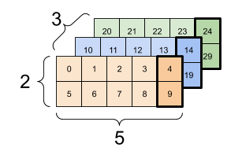 | 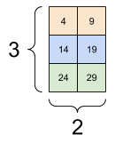 |
Read the tensor slicing guide to learn how you can apply indexing to manipulate individual elements in your tensors.
1.4. Manipulating Shapes¶
Reshaping a tensor is of great utility.
# Shape returns a `TensorShape` object that shows the size along each axis
x = tf.constant([[1], [2], [3]])
print(x)
print(x.shape)
tf.Tensor(
[[1]
[2]
[3]], shape=(3, 1), dtype=int32)
(3, 1)
# You can convert this object into a Python list, too
print(x.shape.as_list())
[3, 1]
You can reshape a tensor into a new shape. The tf.reshape operation is fast and cheap as the underlying data does not need to be duplicated.
# You can reshape a tensor to a new shape.
# Note that you're passing in a list
reshaped = tf.reshape(x, [1, 3])
print(x)
print(x.shape)
print(reshaped)
print(reshaped.shape)
tf.Tensor(
[[1]
[2]
[3]], shape=(3, 1), dtype=int32)
(3, 1)
tf.Tensor([[1 2 3]], shape=(1, 3), dtype=int32)
(1, 3)
The data maintains its layout in memory and a new tensor is created, with the requested shape, pointing to the same data.
TensorFlow uses C-style “row-major” memory ordering, where incrementing the rightmost index corresponds to a single step in memory.
print(rank_3_tensor)
tf.Tensor(
[[[ 0 1 2 3 4]
[ 5 6 7 8 9]]
[[10 11 12 13 14]
[15 16 17 18 19]]
[[20 21 22 23 24]
[25 26 27 28 29]]], shape=(3, 2, 5), dtype=int32)
If you flatten a tensor you can see what order it is laid out in memory.
# A `-1` passed in the `shape` argument says "Whatever fits".
print(tf.reshape(rank_3_tensor, [-1]))
tf.Tensor(
[ 0 1 2 3 4 5 6 7 8 9 10 11 12 13 14 15 16 17 18 19 20 21 22 23
24 25 26 27 28 29], shape=(30,), dtype=int32)
Typically the only reasonable use of tf.reshape is to combine or split adjacent axes (or add/remove 1s).
For this 3x2x5 tensor, reshaping to (3x2)x5 or 3x(2x5) are both reasonable things to do, as the slices do not mix:
print(rank_3_tensor, "\n")
print(tf.reshape(rank_3_tensor, [3*2, 5]), "\n")
print(tf.reshape(rank_3_tensor, [3, -1]))
tf.Tensor(
[[[ 0 1 2 3 4]
[ 5 6 7 8 9]]
[[10 11 12 13 14]
[15 16 17 18 19]]
[[20 21 22 23 24]
[25 26 27 28 29]]], shape=(3, 2, 5), dtype=int32)
tf.Tensor(
[[ 0 1 2 3 4]
[ 5 6 7 8 9]
[10 11 12 13 14]
[15 16 17 18 19]
[20 21 22 23 24]
[25 26 27 28 29]], shape=(6, 5), dtype=int32)
tf.Tensor(
[[ 0 1 2 3 4 5 6 7 8 9]
[10 11 12 13 14 15 16 17 18 19]
[20 21 22 23 24 25 26 27 28 29]], shape=(3, 10), dtype=int32)
| Some good reshapes. | ||
|---|---|---|
| 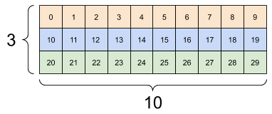 | 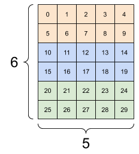 |
Reshaping will “work” for any new shape with the same total number of elements, but it will not do anything useful if you do not respect the order of the axes.
Swapping axes in tf.reshape does not work; you need tf.transpose for that.
# Bad examples: don't do this
# You can't reorder axes with reshape.
print(tf.reshape(rank_3_tensor, [2, 3, 5]), "\n")
# This is a mess
print(tf.reshape(rank_3_tensor, [5, 6]), "\n")
# This doesn't work at all
try:
tf.reshape(rank_3_tensor, [7, -1])
except Exception as e:
print(f"{type(e).__name__}: {e}")
tf.Tensor(
[[[ 0 1 2 3 4]
[ 5 6 7 8 9]
[10 11 12 13 14]]
[[15 16 17 18 19]
[20 21 22 23 24]
[25 26 27 28 29]]], shape=(2, 3, 5), dtype=int32)
tf.Tensor(
[[ 0 1 2 3 4 5]
[ 6 7 8 9 10 11]
[12 13 14 15 16 17]
[18 19 20 21 22 23]
[24 25 26 27 28 29]], shape=(5, 6), dtype=int32)
InvalidArgumentError: Input to reshape is a tensor with 30 values, but the requested shape requires a multiple of 7 [Op:Reshape]
| Some bad reshapes. | ||
|---|---|---|
| 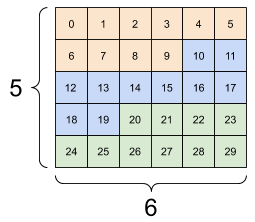 | 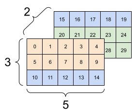 | 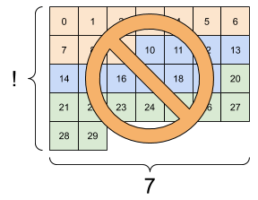 |
You may run across not-fully-specified shapes. Either the shape contains a None (an axis-length is unknown) or the whole shape is None (the rank of the tensor is unknown).
Except for tf.RaggedTensor, such shapes will only occur in the context of TensorFlow’s symbolic, graph-building APIs:
tf.function
The keras functional API.
1.5. More on DTypes¶
我們可以用
Tensor.dtype來看 data type當我們用建立 tensor 時，可以
不指定 dtype, 那tensorflow 會自動幫你挑適合的 (e.g.
tf.int32,tf.float32)直接指定 dtype
也可以用
tf.cast()來轉換 dtype
# 不指定 dtype
tt = tf.constant([2.2, 3.3, 4.4])
print(tt.dtype)
# 指定 dtype
the_f64_tensor = tf.constant([2.2, 3.3, 4.4], dtype=tf.float64)
print(the_f64_tensor.dtype)
# cast type
the_f16_tensor = tf.cast(the_f64_tensor, dtype=tf.float16)
print(the_f16_tensor.dtype)
# Now, cast to an uint8 and lose the decimal precision
the_u8_tensor = tf.cast(the_f16_tensor, dtype=tf.uint8)
print(the_u8_tensor)
print(the_u8_tensor.dtype)
<dtype: 'float32'>
<dtype: 'float64'>
<dtype: 'float16'>
tf.Tensor([2 3 4], shape=(3,), dtype=uint8)
<dtype: 'uint8'>
1.6. Broadcasting¶
Broadcasting is a concept borrowed from the equivalent feature in NumPy{:.external}.
In short, under certain conditions, smaller tensors are “stretched” automatically to fit larger tensors when running combined operations on them.
The simplest and most common case is when you attempt to multiply or add a tensor to a scalar. In that case, the scalar is broadcast to be the same shape as the other argument.
x = tf.constant([1, 2, 3])
y = tf.constant(2)
z = tf.constant([2, 2, 2])
# All of these are the same computation
print(tf.multiply(x, 2))
print(x * y)
print(x * z)
tf.Tensor([2 4 6], shape=(3,), dtype=int32)
tf.Tensor([2 4 6], shape=(3,), dtype=int32)
tf.Tensor([2 4 6], shape=(3,), dtype=int32)
Likewise, axes with length 1 can be stretched out to match the other arguments. Both arguments can be stretched in the same computation.
In this case a 3x1 matrix is element-wise multiplied by a 1x4 matrix to produce a 3x4 matrix. Note how the leading 1 is optional: The shape of y is [4].
# These are the same computations
x = tf.reshape(x,[3,1])
y = tf.range(1, 5)
print(x, "\n")
print(y, "\n")
print(tf.multiply(x, y))
tf.Tensor(
[[1]
[2]
[3]], shape=(3, 1), dtype=int32)
tf.Tensor([1 2 3 4], shape=(4,), dtype=int32)
tf.Tensor(
[[ 1 2 3 4]
[ 2 4 6 8]
[ 3 6 9 12]], shape=(3, 4), dtype=int32)
A broadcasted add: a [3, 1] times a [1, 4] gives a [3,4] |
|---|
| 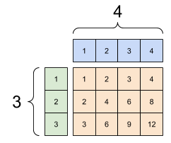 |
Here is the same operation without broadcasting:
x_stretch = tf.constant([[1, 1, 1, 1],
[2, 2, 2, 2],
[3, 3, 3, 3]])
y_stretch = tf.constant([[1, 2, 3, 4],
[1, 2, 3, 4],
[1, 2, 3, 4]])
print(x_stretch * y_stretch) # Again, operator overloading
tf.Tensor(
[[ 1 2 3 4]
[ 2 4 6 8]
[ 3 6 9 12]], shape=(3, 4), dtype=int32)
Most of the time, broadcasting is both time and space efficient, as the broadcast operation never materializes the expanded tensors in memory.
You see what broadcasting looks like using tf.broadcast_to.
print(tf.broadcast_to(tf.constant([1, 2, 3]), [3, 3]))
tf.Tensor(
[[1 2 3]
[1 2 3]
[1 2 3]], shape=(3, 3), dtype=int32)
Unlike a mathematical op, for example, broadcast_to does nothing special to save memory. Here, you are materializing the tensor.
It can get even more complicated. This section{:.external} of Jake VanderPlas’s book Python Data Science Handbook shows more broadcasting tricks (again in NumPy).
1.7. Ragged Tensors¶
A tensor with variable numbers of elements along some axis is called “ragged”. Use
tf.ragged.RaggedTensorfor ragged data.For example, This cannot be represented as a regular tensor:
A `tf.RaggedTensor`, shape: [4, None] |
|---|
| 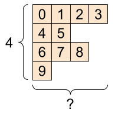 |
ragged_list = [
[0, 1, 2, 3],
[4, 5],
[6, 7, 8],
[9]]
try:
tensor = tf.constant(ragged_list)
except Exception as e:
print(f"{type(e).__name__}: {e}")
ValueError: Can't convert non-rectangular Python sequence to Tensor.
Instead create a tf.RaggedTensor using tf.ragged.constant:
ragged_tensor = tf.ragged.constant(ragged_list)
print(ragged_tensor)
<tf.RaggedTensor [[0, 1, 2, 3], [4, 5], [6, 7, 8], [9]]>
The shape of a tf.RaggedTensor will contain some axes with unknown lengths:
print(ragged_tensor.shape)
(4, None)
1.8. String tensors¶
tf.string is a dtype, which is to say you can represent data as strings (variable-length byte arrays) in tensors.
The strings are atomic and cannot be indexed the way Python strings are. The length of the string is not one of the axes of the tensor. See tf.strings for functions to manipulate them.
Here is a scalar string tensor:
# Tensors can be strings, too here is a scalar string.
scalar_string_tensor = tf.constant("Gray wolf")
print(scalar_string_tensor)
tf.Tensor(b'Gray wolf', shape=(), dtype=string)
And a vector of strings:
A vector of strings, shape: [3,] |
|---|
# If you have three string tensors of different lengths, this is OK.
tensor_of_strings = tf.constant(["Gray wolf",
"Quick brown fox",
"Lazy dog"])
# Note that the shape is (3,). The string length is not included.
print(tensor_of_strings)
tf.Tensor([b'Gray wolf' b'Quick brown fox' b'Lazy dog'], shape=(3,), dtype=string)
In the above printout the b prefix indicates that tf.string dtype is not a unicode string, but a byte-string. See the Unicode Tutorial for more about working with unicode text in TensorFlow.
If you pass unicode characters they are utf-8 encoded.
tf.constant("🥳👍")
<tf.Tensor: shape=(), dtype=string, numpy=b'\xf0\x9f\xa5\xb3\xf0\x9f\x91\x8d'>
Some basic functions with strings can be found in tf.strings, including tf.strings.split.
# You can use split to split a string into a set of tensors
print(tf.strings.split(scalar_string_tensor, sep=" "))
tf.Tensor([b'Gray' b'wolf'], shape=(2,), dtype=string)
# ...but it turns into a `RaggedTensor` if you split up a tensor of strings,
# as each string might be split into a different number of parts.
print(tf.strings.split(tensor_of_strings))
<tf.RaggedTensor [[b'Gray', b'wolf'], [b'Quick', b'brown', b'fox'], [b'Lazy', b'dog']]>
Three strings split, shape: [3, None] |
|---|
| 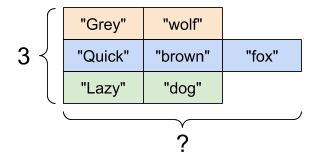 |
And tf.string.to_number:
text = tf.constant("1 10 100")
print(tf.strings.to_number(tf.strings.split(text, " ")))
tf.Tensor([ 1. 10. 100.], shape=(3,), dtype=float32)
Although you can’t use tf.cast to turn a string tensor into numbers, you can convert it into bytes, and then into numbers.
byte_strings = tf.strings.bytes_split(tf.constant("Duck"))
byte_ints = tf.io.decode_raw(tf.constant("Duck"), tf.uint8)
print("Byte strings:", byte_strings)
print("Bytes:", byte_ints)
Byte strings: tf.Tensor([b'D' b'u' b'c' b'k'], shape=(4,), dtype=string)
Bytes: tf.Tensor([ 68 117 99 107], shape=(4,), dtype=uint8)
# Or split it up as unicode and then decode it
unicode_bytes = tf.constant("アヒル 🦆")
unicode_char_bytes = tf.strings.unicode_split(unicode_bytes, "UTF-8")
unicode_values = tf.strings.unicode_decode(unicode_bytes, "UTF-8")
print("\nUnicode bytes:", unicode_bytes)
print("\nUnicode chars:", unicode_char_bytes)
print("\nUnicode values:", unicode_values)
Unicode bytes: tf.Tensor(b'\xe3\x82\xa2\xe3\x83\x92\xe3\x83\xab \xf0\x9f\xa6\x86', shape=(), dtype=string)
Unicode chars: tf.Tensor([b'\xe3\x82\xa2' b'\xe3\x83\x92' b'\xe3\x83\xab' b' ' b'\xf0\x9f\xa6\x86'], shape=(5,), dtype=string)
Unicode values: tf.Tensor([ 12450 12498 12523 32 129414], shape=(5,), dtype=int32)
The tf.string dtype is used for all raw bytes data in TensorFlow. The tf.io module contains functions for converting data to and from bytes, including decoding images and parsing csv.
1.9. Sparse tensors¶
Sometimes, your data is sparse, like a very wide embedding space. TensorFlow supports tf.sparse.SparseTensor and related operations to store sparse data efficiently.
A `tf.SparseTensor`, shape: [3, 4] |
|---|
| 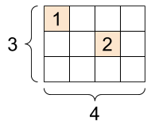 |
# Sparse tensors store values by index in a memory-efficient manner
sparse_tensor = tf.sparse.SparseTensor(indices=[[0, 0], [1, 2]],
values=[1, 2],
dense_shape=[3, 4])
print(sparse_tensor, "\n")
# You can convert sparse tensors to dense
print(tf.sparse.to_dense(sparse_tensor))
SparseTensor(indices=tf.Tensor(
[[0 0]
[1 2]], shape=(2, 2), dtype=int64), values=tf.Tensor([1 2], shape=(2,), dtype=int32), dense_shape=tf.Tensor([3 4], shape=(2,), dtype=int64))
tf.Tensor(
[[1 0 0 0]
[0 0 2 0]
[0 0 0 0]], shape=(3, 4), dtype=int32)